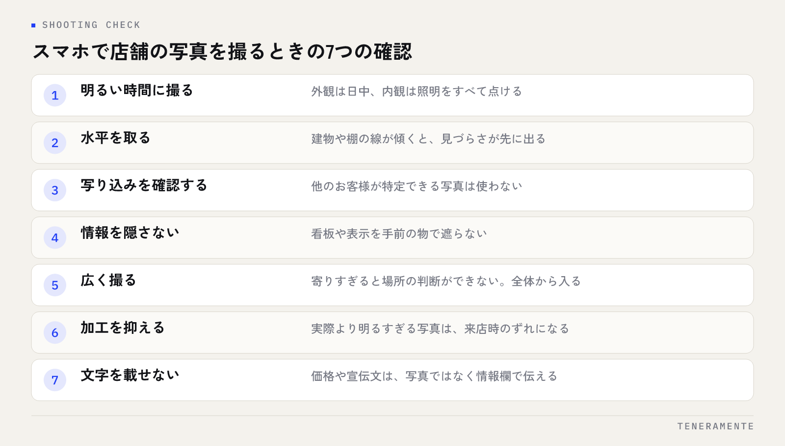

Googleビジネスプロフィールに載せる写真の選び方で迷ったら、「きれいに見えるか」ではなく「来店前の疑問に答えているか」で選んでください。マップで見つけた人が写真を見る目的は、鑑賞ではなく確認です。入口はどこか、席はどんな様子か、自分が行って浮かないか。この確認が写真でできない店舗は、順位が出ていても比較の段階で外れます。
📌 この記事の結論
写真は枚数を競うものではなく、種類の抜けを埋めるものです。外観・入口・内観・席・スタッフ・商品の6種類を先に埋め、そのうえで月1回の追加と季節ごとの入れ替えを回します。
01写真で見られているのは、きれいさより分かりやすさ
マップの検索結果から店舗の情報を開いた人は、たいてい他の数店舗と並べて見ています。そのときに効くのは、写真の美しさではなく、迷いが消えるかどうかです。
ビルの何階にあるのか、入口はこの扉で合っているのか、一人で入れる雰囲気か。こうした疑問に写真で答えられていれば、電話で確認する手間が消えます。逆に、照明を落としたおしゃれな一枚だけが並んでいる状態は、見る人の疑問を増やします。
写真の役目は、来店前の答え合わせです。だからプロが撮った一枚よりも、スマホで撮った「分かる写真」が6種類そろっているほうが先に効きます。順位そのものの仕組みはGoogleマップの掲載順位はどう決まるかに分けて書いているので、表示側の話はそちらを参照してください。
02先に埋めておきたい写真の種類
Googleビジネスプロフィールの写真は、ロゴとカバー写真のほかに、外観・内観・商品・チームといった枠に分かれています。まずは次の6種類を1枚ずつ埋めることを目標にしてください。
| 種類 | 何を写すか | 答えている疑問 |
|---|---|---|
| 外観 | 建物全体と看板。昼間の明るい時間に正面から | 場所はここで合っているか |
| 入口 | 扉の前。階数表示やエレベーターも含める | どこから入るのか |
| 内観 | 入ってすぐの視点。全体の広さが分かる画角 | 中はどんな様子か |
| 席・設備 | 席の種類、作業台、待合。使う場所そのもの | 自分の目的に合うか |
| スタッフ | 対応する人の様子。顔出しは本人の同意を得る | 誰が対応するのか |
| 商品・メニュー | 看板になるもの。価格が読める形でも可 | 何がいくらで手に入るか |
このうち後回しになりやすいのは入口です。外観だけでは、テナントビルの店舗はたどり着けません。扉の写真が1枚あるだけで、到着前の電話が減ります。
画像の仕様はヘルプの推奨に合わせる
Googleのヘルプでは、形式は JPG または PNG、サイズは 10KB〜5MB、解像度は 720×720 ピクセル以上が推奨とされています。スマホで普通に撮った写真はこの範囲に収まります。加工アプリで極端に圧縮したり、文字を大きく載せた画像を使う必要はありません。
03枚数は「多さ」より「抜けがないこと」
何枚載せればよいかという質問には、種類で答えるのが実務的です。同じ角度の商品写真が数十枚並んでいる状態より、6種類が1枚ずつそろっている状態のほうが、見る人の疑問は減ります。
目安としては、まず6種類を各1枚。次に、よく聞かれることを写真にします。駐車場の場所、待合の広さ、支払い方法が分かるレジ周り、ベビーカーで入れるかが分かる通路。問い合わせで繰り返し聞かれた質問は、写真で先に答えられます。
枚数を増やす段階で気をつけるのは、順番です。プロフィール上で最初に見える位置に、外観と内観が来るようにしてください。古い写真や内容の分かりにくい写真が前に出ていると、枚数が多いほど逆効果になります。
04スマホで撮るときの7つの確認
撮影は機材より条件で決まります。次の7点を満たすだけで、見える写真になります。

- 明るい時間に撮る：外観は日中、内観は照明をすべて点ける
- 水平を取る：建物や棚の線が傾くと素人感より先に見づらさが出る
- 人の写り込みを確認する：他のお客様が特定できる写真は使わない
- 情報を隠さない：看板や表示を手前の物で遮らない
- 広く撮る：寄りすぎると場所の判断ができない。全体から入る
- 加工を抑える：実際より明るすぎる写真は、来店時のずれになる
- 文字を載せない：価格や宣伝文はキャプションではなく情報欄で伝える
とくに3つめは後から直せません。撮影前に店内を見渡し、写り込みが避けられない時間帯なら撮り直してください。
05更新頻度は、月1回の追加と季節ごとの入れ替え
写真は一度そろえたら終わりではありません。古い写真だけが並んでいる状態は、営業しているかどうかの判断材料になってしまいます。
現実的な周期は、月1回の追加と、季節の変わり目の入れ替えです。月1回は、その月に撮った1〜2枚を足すだけで十分です。入れ替えは、季節感の出る写真（店頭の装飾、服装、商品）を見直すタイミングで行います。
改装したとき、看板を変えたとき、営業時間や席の構成を変えたときは、周期とは別にすぐ差し替えてください。古い外観写真は、到着できない原因になります。月次でまとめて見る項目はGoogleビジネスプロフィールの月次運用チェックリストに並べてあります。
06やってはいけない写真の使い方
数を増やしたい気持ちが先に立つと、次のような使い方になりがちです。いずれも効果が出ないか、掲載そのものに影響します。
1つめは、他社や素材サイトの画像を使うことです。 権利の問題に加えて、実際の店舗と違う印象を作ります。
2つめは、文字だけの画像を載せることです。 キャンペーンの告知は写真枠ではなく投稿機能で伝えます。投稿の使い方はGoogleビジネスプロフィールの投稿ネタにまとめています。
3つめは、別店舗の写真を流用することです。 多店舗の場合、各店舗の外観と内観はその店舗で撮ってください。
4つめは、実態と違う加工です。 広く明るく見える写真は期待を上げますが、来店時の落差は口コミに出ます。
人が写る写真は同意を取る
スタッフの顔が写る写真は、本人の同意を得てから掲載してください。退職後の取り扱いも先に決めておくと、あとで差し替えの判断に迷いません。お客様が写っている写真は、特定できる形であれば使わないのが安全です。
07口コミの写真とオーナー写真は役目が違う
プロフィールには、店舗が載せた写真と、来店者が口コミに付けた写真の両方が並びます。この2つは消し分けができません。来店者の写真が意図と違って見えることもありますが、店舗側で削除はできません。
できるのは、店舗側の写真で基準を作っておくことです。外観・入口・内観がきちんとそろっていれば、来店者の写真はその補足として読まれます。逆に店舗側の写真が薄いと、来店者の写真だけが店舗の印象になります。
来店者の写真が増えやすいのは、席や商品が分かりやすい店舗です。撮られることを前提に、看板や表示の見え方を整えておくと、結果として載る写真の質も変わります。
写真は何枚くらいから効果が出ますか？
プロのカメラマンに頼んだほうがよいですか？
載せた写真が表示されないことがあります
08まとめ：写真は「来店前の答え合わせ」
Googleビジネスプロフィールの写真の選び方は、種類で決めます。外観・入口・内観・席・スタッフ・商品の6種類を先に1枚ずつ埋め、そのあとで、よく聞かれる質問に答える写真を足していきます。
撮影は明るさ・水平・画角と、写り込みの確認だけ守れば、スマホで足ります。更新は月1回の追加と季節ごとの入れ替え、改装や看板の変更時は即差し替え。増やすべきは枚数ではなく、答えている疑問の数です。
TENERAMENTEなら、どの種類の写真が抜けているかの洗い出しから、撮る順番と月1回の更新を誰が回すかまで、店舗の体制に合わせて設計します。写真の判断が担当者の感覚に任されなくなり、更新が止まらない形になります。MEO対策の進め方をご覧いただいたうえで、お問い合わせからお気軽にご相談ください。